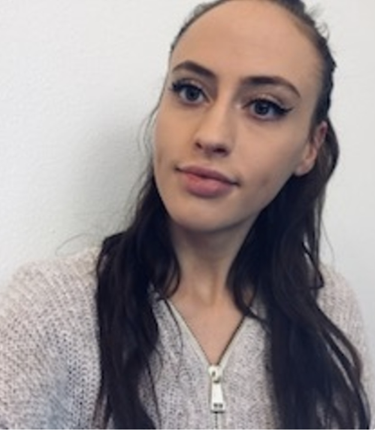
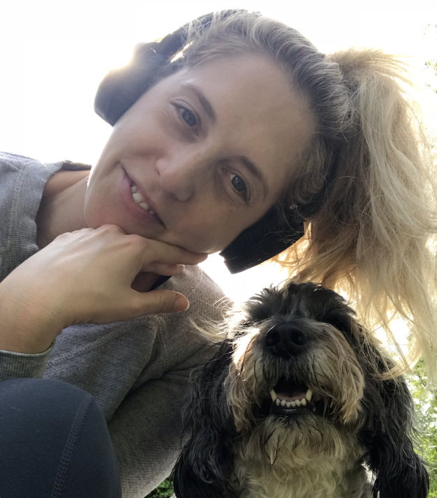
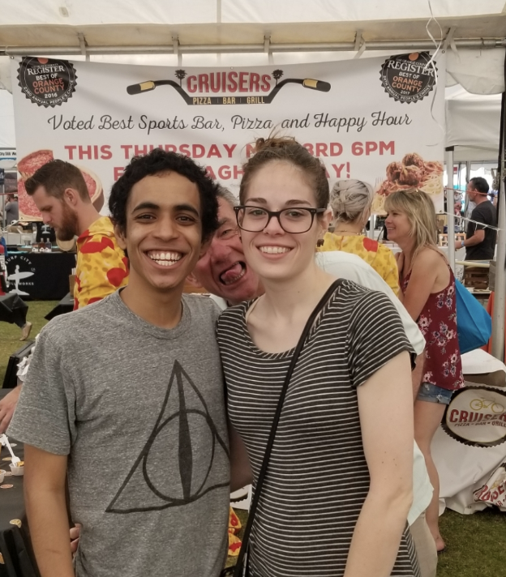
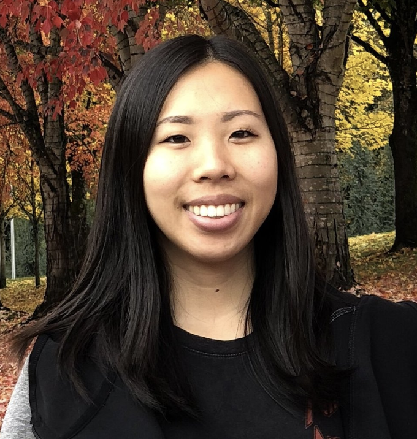

Phoebe Lablonde
Alma Mater: University of Arizona
Before Attending Alchemy: Studied neuroscience at the University of Arizona, wavering between becoming a neuroscientist or a doctor. Dropped out in my 3rd year after painfully accepting that both modern medicine and science serve a business model rather than The People. Interested in code because it’s stimulating and capable of making an impact.
Hobbies: Reading and Youtubing.
Liz Keppler
Alma Mater: Cleveland State University
Before Attending Alchemy: I worked in Sales and Marketing at a fish and seafood distributor. I am still working for them remotely as a Digital Strategist (as much as I can). This position sparked my interest in coding because I saw first-hand how valuable this skill is in the world of social media and web design.
Hobbies: Hiking, the outdoors, traveling, spending time with my dogs and human friends.
Dave Cornelius
Alma Mater:
Before Attending Alchemy: I worked at a sports bar in Huntington Beach, California and was just having a good time living in a beach town. My GF and I decided it was time for a change and moved to Hillsboro with the intention of coming into the city....and well here we are. No actual prior coding experience, but my Dad suggested Alchemy and I said why not.
Hobbies: Reading, playing video games and snowboarding.
Leslie Shea
Alma Mater: University of Southern California
Before Attending Alchemy: I worked at Oracle for two years as a business development consultant, where I provided support and technical resources to small and medium sized businesses in the Southern California region. My experience working there sparked my interest in continuing my career in technology. I had my first taste of coding back in college when I took an introductory course in Java, and that interest in coding has stayed with me since. Now, I am able to fully dedicate my time to this profession, and I can’t wait to see where it takes me!
Hobbies: Video games, spending time with friends, and watching movies.